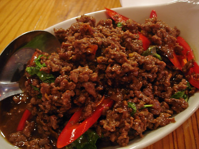

Pad Ka Prow
Home

Description
Pad Kaprao, also spelled Pad Kra Pao or Phat Kaphrao, is a popular Thai stir-fry
dish featuring meat (chicken, pork, beef, or seafood), holy basil, chilies, and
garlic, all cooked in a savory sauce. It's known for its spicy, garlicky, and
aromatic flavor, and is often served over rice with a fried egg on top.
Ingredients
- 1 pound of ground pork, beef, or chicken (You can do what I do here which is
chop
up 1 pound of skinless chicken breasts with a cleaver. You get better texture
that
way.)
- 7 (26g) large cloves of garlic, peeled
- 7 (16g) bird’s eye chilies (or however many you can tolerate)
- 1 large shallot (20g), peeled and roughly chopped
- 2 tablespoons vegetable oil
- 1 tablespoon fish sauce
- 1 tablespoon thin/light soy sauce or seasoning sauce (such as Golden Mountain
aka
"the Green Cap" sauce")
- 2 tablespoon dark sweet soy sauce (kecap manis)
- 1 tablespoon oyster sauce
- 1 cup holy basil leaves, packed
Directions
- If you have a mortar, pound together the garlic, chilies, and shallot until
you get a coarse paste. If no mortar, either chop them all up with a cleaver
on a
chopping block or pulse them into a coarse paste in a mini-chopper.
- In a skillet, heat up the vegetable oil over medium-high heat. Add the paste
to it and fry until fragrant.
- Add the meat to the skillet and break it up with the spatula into small
pieces.
- Add the remaining ingredients (except the basil leaves), correcting seasoning
as needed. [I don't like sugar in my Pad Ka-Prao; besides, the dark sweet soy
sauce provides enough sweetness for me. But if you think you'd like it even
sweeter, either add about a teaspoon of palm or brown sugar or double the
amount of dark sweet soy sauce (which will also make the end product darker in
color). Purists, as mentioned in the post, won't even use anything for
salinity other than fish sauce.]
- Once the meat is cooked through, check the amount of liquid in the skillet. If
it’s too dry, add a little bit of water or sodium-free broth.
- Before taking the skillet off the heat, add the basil leaves to the mixture
and give it a couple of stirs. We only want to wilt the basil with the
residual heat that is still in the pan so as not to mute the fragrance of the
fresh holy basil leaves.
- Serve over rice. A Thai-style crispy fried egg on top and a tiny bowl of
nam-pla prik would be nice.